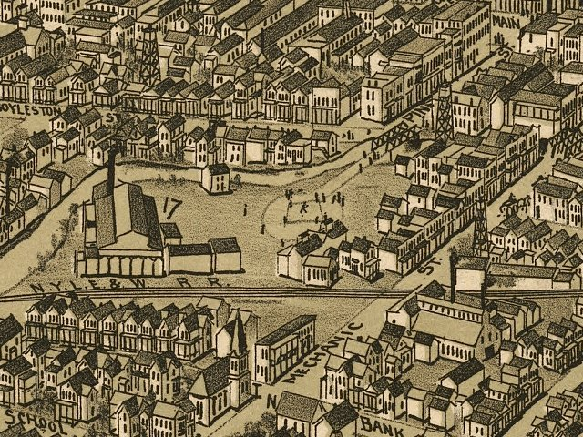

| Bradford, Pennsylvania - 1895 |
|---|
 |
| Bradford, McKean County, Pennsylvania, 1895.
Drawn by T. M. Fowler. Fowler, T. M. (Thaddeus Mortimer), 1842-1922. CREATED/PUBLISHED Morrisville, Pa., T. M. Fowler & James B. Moyer [1895] NOTES Perspective map not drawn to scale. Bird's-eye-view. Indexed for points of interest. REFERENCE LC Panoramic maps (2nd ed.), 739 |